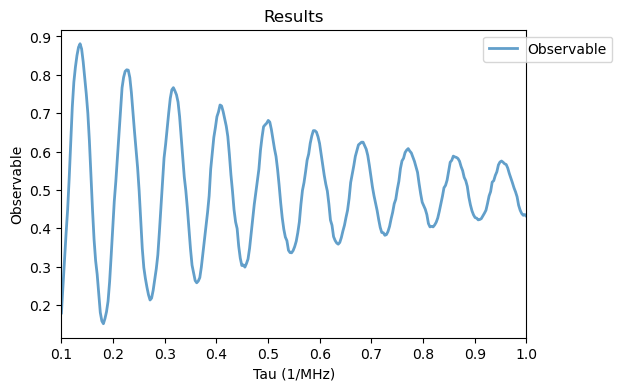
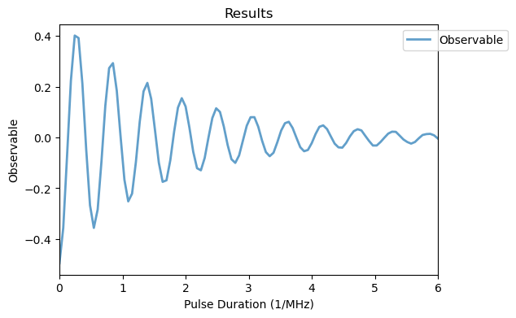

This tutorial follows the work from Tikai Chang et al. ‘Strong coupling of a superconducting flux qubit to single bismuth donors’, Nature Communications 10.1038/s41467-025-64757-5. In this work, a spin qubit from a bismuth donor is coupled to a superconducting flux qubit. QuaCCAToo models both qubit systems within the SiBi_flux class.
[1]:
import numpy as np
import scipy.constants as cte
from qutip import basis, fock_dm, jmat, qeye, tensor
gamma_e = cte.value("electron gyromag. ratio in MHz/T") * 1e-3
from quaccatoo import Analysis, Ramsey, SiBiFlux, SpinLocking
Flux Qubit
We begin reproducing the results from the flux qubit characterization as shown in the Results section and in Fig 1. We assume the same experimental values for \(\Delta\), \(\Gamma^{2R}\) and \(\Omega\) as in the text. For \(\varepsilon\), we take an arbitrary value to match the experimental results. An object of the SiBi_flux class is instantiated considering an initial state \(|0\rangle\), observable \(|0\rangle \langle 0|\) and collapse operator
\(\sqrt{\Gamma^{2R}} \hat{S}_z\). The spin variable in this experiment is set to False, since the spin Hamiltonian does not need to be simulated.
[4]:
Delta = 7.257e3
epsilon = 400
Omega = 60.5
L2 = 0.627**.5*jmat(1/2, 'z')
sys = SiBiFlux(
rho0 = basis(2,0),
observable = fock_dm(2,0),
Delta = Delta,
epsilon = epsilon,
c_ops = L2,
spin = False,
)
Based on the defined system, we instantiate a Ramsey sequence from the corresponding predefined class in QuaCCAToo and run the simulation, from which we obtain a decaying Ramsey fringe as in Fig 1h of the text.
[5]:
ramsey_sim = Ramsey(
free_duration=np.linspace(.1, 1, 300),
system = sys,
pi_pulse_duration = 1/2/Omega,
h1 = 2*Omega*jmat(1/2, 'x'),
pulse_params = {'f_pulse': Delta}
)
ramsey_sim.run()
Analysis(ramsey_sim).plot_results()

Spin-Locking
Following the Ramsey simulation of the flux qubit, we now couple both qubits in a spin-locking experiment as in Fig 2d. The bismuth electron spin must be brought into resonance with the driven flux qubit \(\omega_s = \Delta + \Omega = 7.3175\) GHz, which is the flip-flop condition used in the text. Here we set N = False, so the nuclear spin and the hyperfine term of Eq. (3) are not simulated. In the actual experiment the ∼7.3 GHz spin transition originates almost entirely from the
hyperfine interaction, not from a Zeeman splitting. Without the hyperfine term, we can place the electron spin at the required frequency through the electron Zeeman energy by imposing \(B_0 = (\Delta + \Omega)/\gamma_e \approx 261\) mT, even though this is not the experimental condition.
[6]:
Delta = 7.257e3
Omega = 60.5
g = 4*1.8
B0 = (Delta + Omega)/gamma_e
L1 = 0.150**.5*tensor(jmat(1/2, '-'), qeye(2))
init_state = tensor(basis(2,0), basis(2,0))
obs = tensor(jmat(1/2, 'z'), qeye(2))
sys = SiBiFlux(
rho0 = init_state,
observable = obs,
Delta = Delta,
B0 = B0,
g = g,
N = False,
c_ops = L1
)
spin_lock_sim = SpinLocking(
pulse_duration=np.linspace(0, 6, 100),
system = sys,
pi_pulse_duration = 1/2/Omega,
h1 = 2*Omega*tensor(jmat(1/2, 'x'), qeye(2)),
pulse_params = {'f_pulse': Delta},
options = {'nsteps':1e6}
)
spin_lock_sim.run()
Analysis(spin_lock_sim).plot_results()
